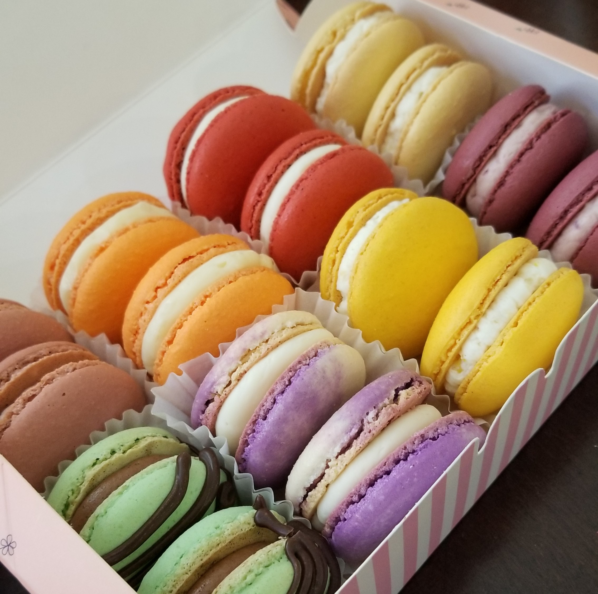
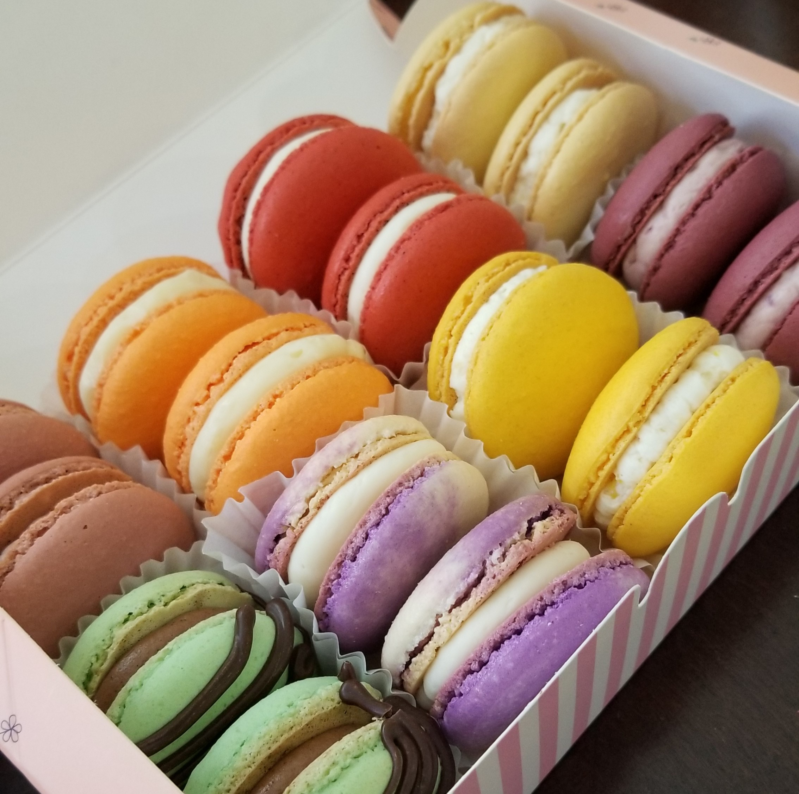

Jenny
Jenny
Ngo
Jenny
Hi! My name is Jenny Ngo and I am a senior at the University of Georgia
studying computer science. During both my academic journey and
professional experience, I have honed my abilities in various
programming languages, including Java, JavaScript, TypeScript, C#, and
C++. At Goldman Sachs, I had the opportunity to work on a scheduled task
automator using Node.js, TypeScript, MongoDB, and Jest. These
experiences have enabled me to contribute effectively to both individual
and team-based projects, as well as to deliver high-quality software
solutions. I'm eager to apply my technical expertise and my drive for
continuous learning to contribute to make a real impact.
In my free time, I love to bake...
 

sculpt...
and paint!
© 2023 Jenny Ngo